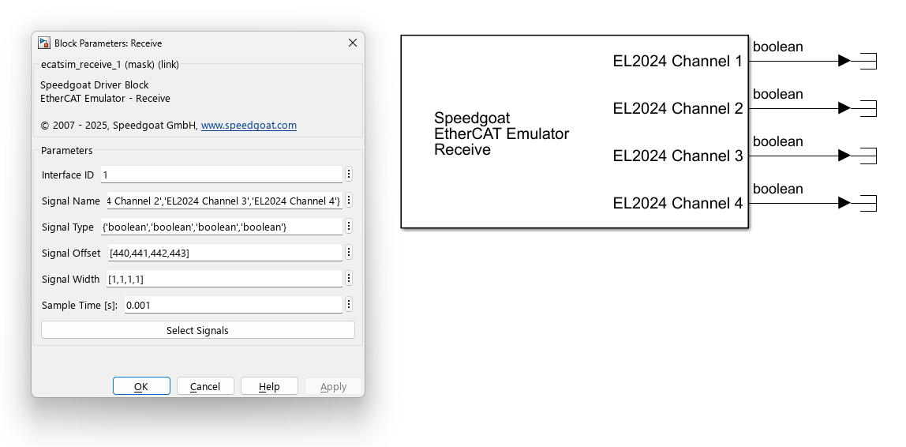
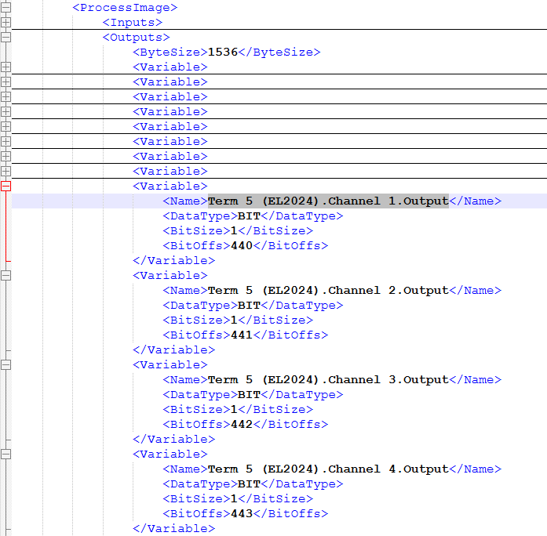
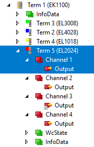
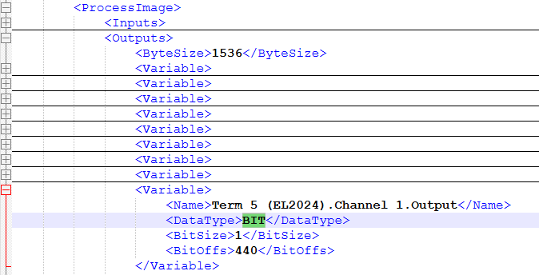
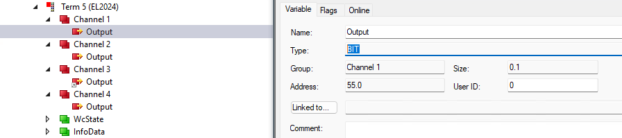
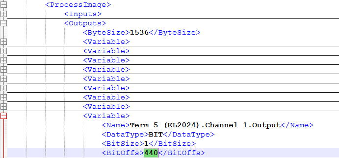
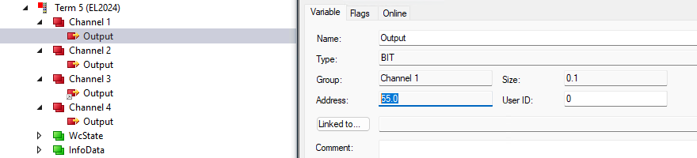
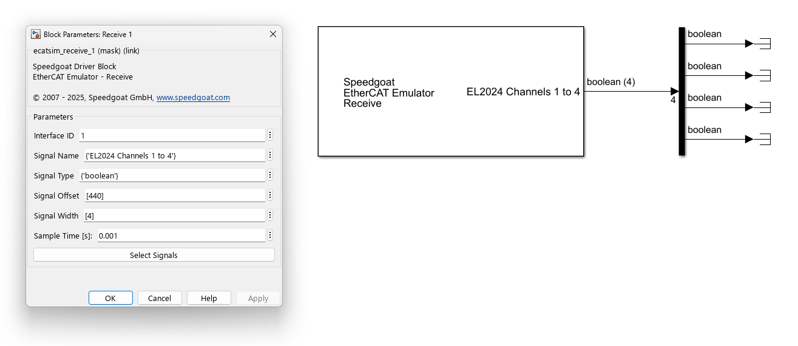

EtherCAT SubDevice Emulator - Receive — Outputs data received from the EtherCAT main device via the process data object communication (PDO)
The Receive block outputs data received from the EtherCAT main device via process data object communication (PDO). The block does not trigger any communication messages, but rather copies data from an internal memory holding data that has been received from the main device in the last communication cycle. You can place as many Receive blocks in the model as you wish: one block could output a single signal, one block could output all the signals associated with a specific device, and one block could even output the data of all the devices.
| Tip | |
|---|---|
Using the createFromEni function, you can import ENI (EtherCAT Network Information) files and autogenerate a ready-to-use communication interface. Based on the information included in the ENI file, the function places the Setup, Send and Receive driver blocks into the model and automatically sets the block parameters. |
This block does not have any input ports.
The number of output ports depends on the number of elements defined in the Signal Type parameter. Each signal is represented by one output port. The port retrieves its label from the corresponding element in the Signal Name parameter, retrieves its data type from the corresponding element in the Signal Type parameter, and retrieves its width (vector length) from the corresponding element in the Signal Width parameter.

Enter the Interface ID of the corresponding Setup block.
Enter the signal names as a cell array of character arrays or strings. The name is simply used as a label for the port on the block icon and serves no other purpose. You can find the signal names in the ENI file and the EtherCAT configuration tool. You can define custom names as well.
 
Enter the signal data types as a cell array of character arrays or strings. You can find the data types in the ENI file and the EtherCAT configuration tool. Simulink data types and the corresponding IEC61131 types are indicated in the table below. Note that data types entered here do not affect frame sizes and the EtherCAT communication at all. The type simply defines the size of the data to be copied from the process data area to the output port. You can reinterpret the data received. Original data of type int16 can be output as uint16. Original data of type double can be output as a uint8 vector of eight elements using the Signal Width parameter.
 
| Simulink data types | IEC61131 data types |
| double | LREAL |
| single | REAL |
| uint32 | UDINT |
| int32 | DINT |
| uint16 | UINT |
| int16 | INT |
| uint8 | USINT |
| int8 | SINT |
| boolean | BOOL, BIT |
Enter the signal offsets as a numeric vector. An offset is a bit address in the process data area of the emulator. Offsets are not relative to the respective subordinate device but absolute over all subordinate devices. You can find the offset in the ENI file and the EtherCAT configuration tool. The number in the ENI file is the actual bit address. The number in the configuration tool might be a pair of byte and bit addresses. Evaluate the byte address * 8 + bit address to get the overall bit address (55 * 8 + 0 = 440). Note that offsets entered here do not affect frame sizes and the EtherCAT communication at all. The offset simply defines the address in the process data area from where to copy data to the output port.
 
The width parameter determines the number of elements of the output port. With the default value of 1, the output port holds a scalar value. With a width greater than 1, the output port becomes a vector. The width has no corresponding entry in the ENI file. Instead, it serves the following use cases:
Output signals whose data types do not match fundamental types. Examples: A custom type of UINT24 is three bytes long and can be output as a vector of bytes. Enter 'uint8' in the Signal Type parameter and 3 in the Signal Width parameter. A custom type that is 9 bits long can be output as a vector of Boolean values. Enter 'boolean' in the Signal Type parameter and 9 in the Signal Width parameter.
Signals that have the same type and are located in the process data area one after the other without gaps can be output as a single vector.

Defines the base sample time at which this driver block gets its sample hit. This parameter can also be set to -1 for inherited sample time. The units are in seconds.
This feature provides an interactive way to configure signal properties using information from the ENI file. The button opens a signal selection interface where output signals can be browsed and selected. After confirmation, signal-specific configuration parameters are automatically populated in the block.
When the button is clicked, the ENI file path is determined by checking for a Setup block in the model that uses the same Interface ID. If such a Setup block is found, the ENI file path is retrieved from the block. If no matching Setup block is available, or if the ENI path cannot be resolved, a file selection dialog opens, allowing the user to manually choose the ENI file.
Once the ENI file has been loaded, a graphical tree browser is displayed. This browser presents a hierarchical view of EtherCAT subordinate devices and their output signals as defined in the ENI file. Devices can be expanded to reveal their output signals. One or more signals can be selected by marking them directly in the tree. Hold the CONTROL key to select multiple individual signals. Hold the SHIFT key to select a range of signals. Selecting a device entry implicitly selects all its signals.
After confirming the selection by clicking Apply, the relevant properties for each marked signal—such as signal name, data type, width and offset—are extracted from the ENI file and written to the corresponding block mask parameters.